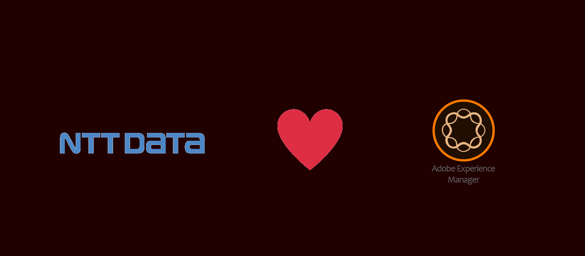
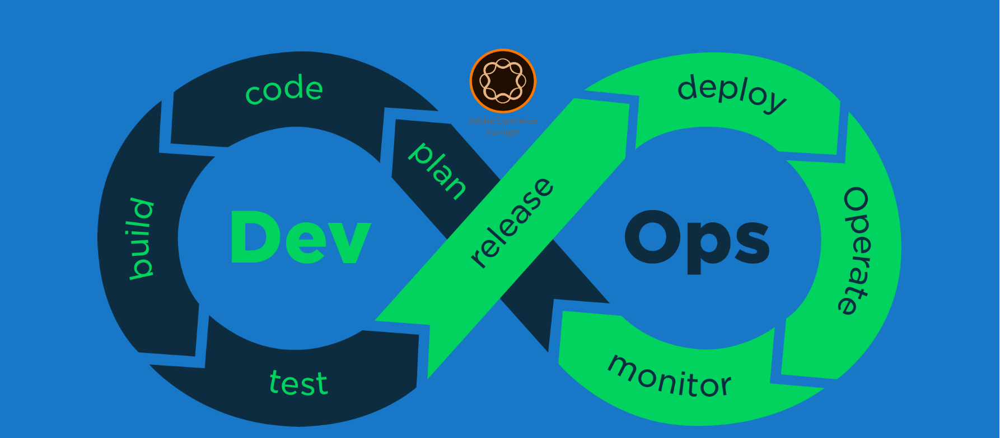

AEM Developer pack
Hosted directly from GitHub repository. For Developers, By Developers.


wisetothenew from NTT DATA Digital on Vimeo.
Creating digital experience frameworks that transform your digital enterprise and produce a return on investment.
Deploying world-class scalable and agile enterprise digital platforms that wow your customers.
You can fork and submit a pull request
We will review it and add you additions